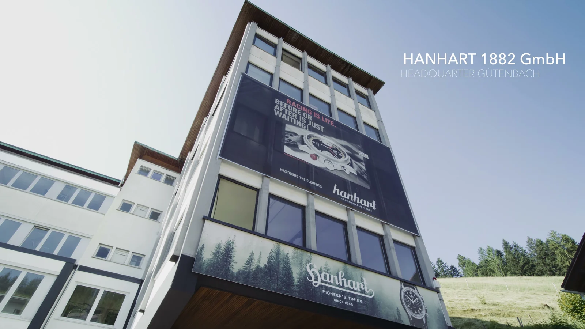
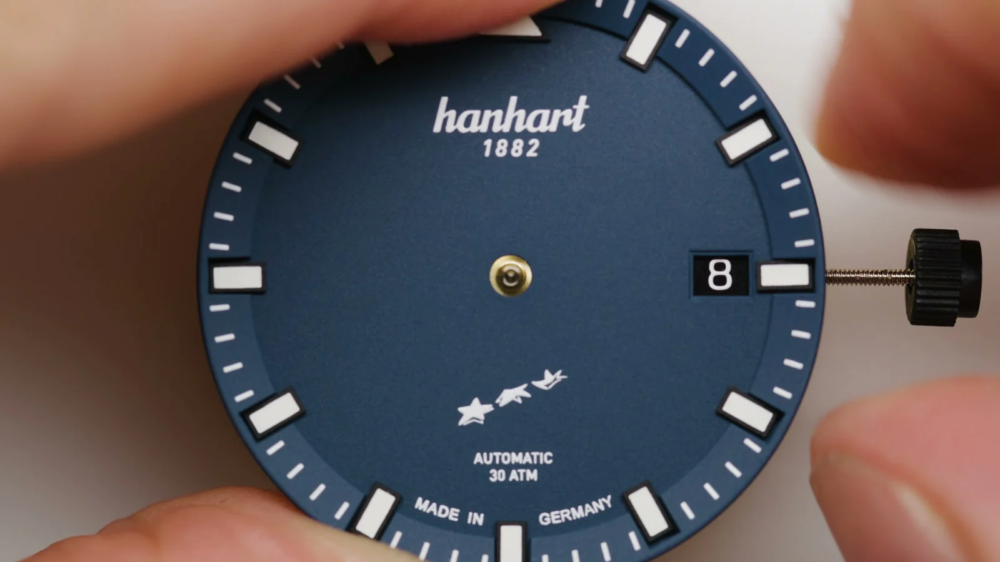
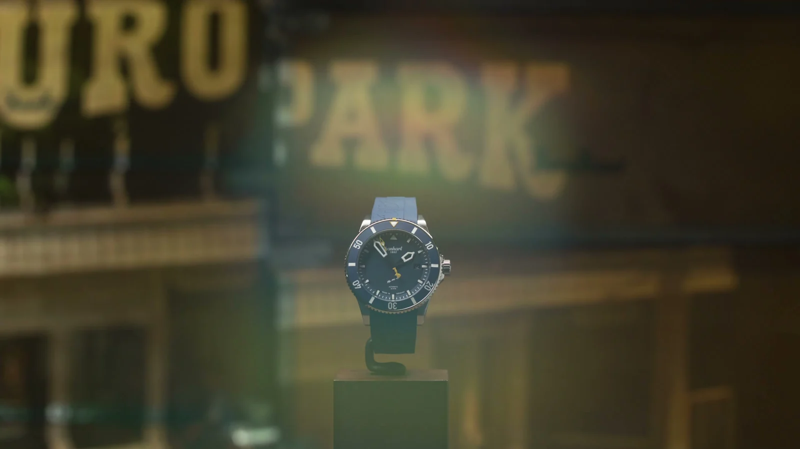
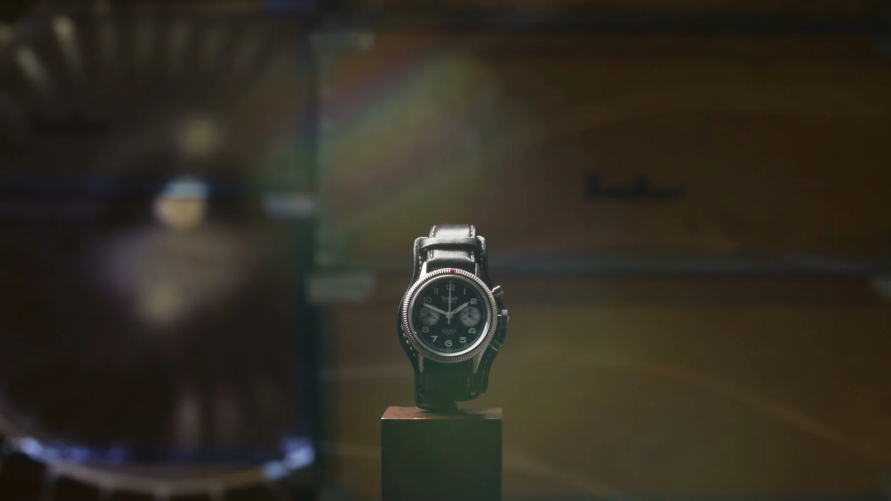
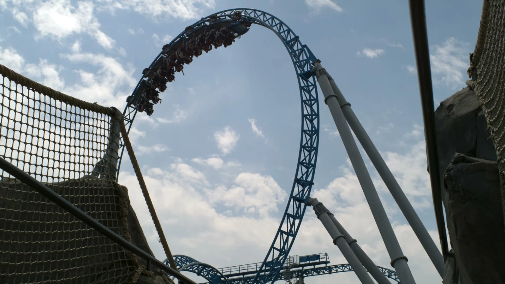
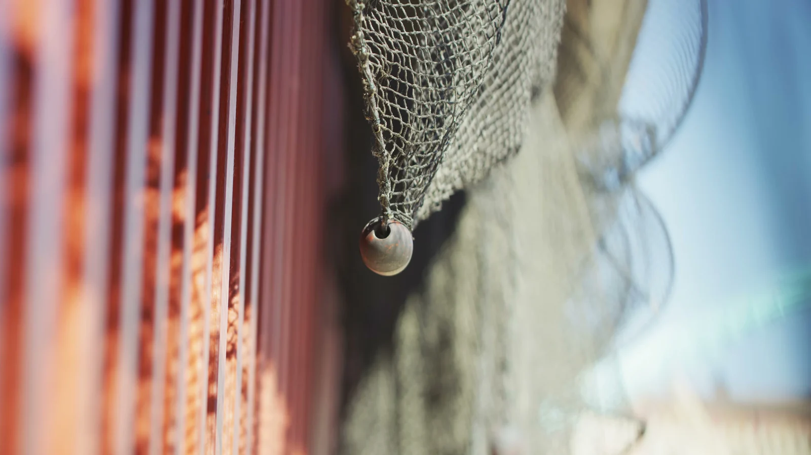

Hanhart / Europa-Park · Brand Film
Hanhart × Europa-Park
Ein Brand Film über die Jubiläumsuhr von Hanhart und Europa-Park.
Ruhige Interviews, Werkstattmomente und Makrodetails zeigen das Produkt und die Menschen dahinter. Mein Beitrag lag in der Kameraarbeit und der Lichtsetzung für diese unterschiedlichen Situationen.
Ähnliches Projekt anfragenBrand Film
Historische Referenzen, die Herstellung der Uhr und ihre Verbindung zum Europa-Park bilden den Rahmen des Films.





Credits
- Mein Beitrag
- Kamera, Lichtsetzung
- Zusammenarbeit
- Hanhart und Europa-Park
- Drehorte
- Gütenbach und Rust